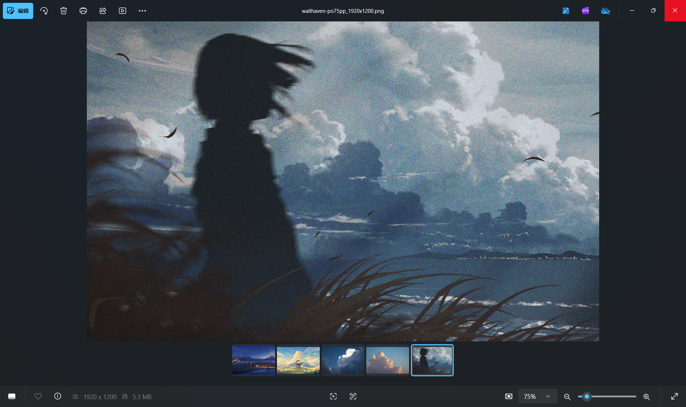

专业格式，直接打开
查看 PSD/PSB 合成图、相机 RAW、HEIC、AVIF、WebP、PDF 等格式，无需为了预览而打开重量级编辑软件。
快速浏览照片、PSD、相机 RAW 与 PDF。简洁的沉浸式界面，加上原生 Windows 资源管理器缩略图支持。
免费开源 · 离线安装 · 无需另装 .NET 运行时

核心体验
查看 PSD/PSB 合成图、相机 RAW、HEIC、AVIF、WebP、PDF 等格式，无需为了预览而打开重量级编辑软件。
并行生成缩略图，复用 Windows 与本地缓存；子目录、最近目录和内容变化自动刷新一应俱全。
为 PSD、PDF 等格式提供 Explorer 缩略图，也可通过双击或右键“使用 AstraView 打开”。
检查、下载、校验并覆盖安装新版本，全程无需再次寻找安装包。
Magick.NET Q8、按需解码和受控并发，在速度、清晰度与内存占用之间取得平衡。
广泛兼容
JPEG · PNG · GIF · BMP · ICO · TIFF
WebP · AVIF · HEIC / HEIF · SVG
PSD / PSB · EXR · DDS · TGA · PDF
CR2 / CR3 · NEF · ARW · DNG · RAF · RW2 · ORF
准备好了吗？
下载完整离线安装包，几分钟内开始使用。